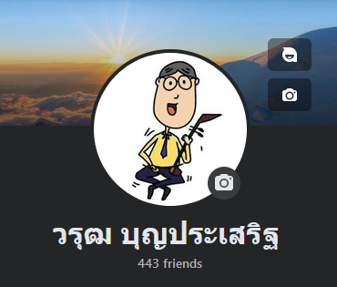

# สวัสดีครับ นักเรียน --- ## วิชา ศิลปะประยุกต์ (อังกะลุง) (ศ21201) ### นักเรียนชั้นมัธยมศึกษาปีที่ 1 --- <section id="themes"> <h2>Themes</h2> <p> reveal.js comes with a few themes built in: <br> <!-- Hacks to swap themes after the page has loaded. Not flexible and only intended for the reveal.js demo deck. --> <a href="#/themes" onclick="document.getElementById('theme').setAttribute('href','dist/theme/black.css'); return false;">Black (default)</a> - <a href="#/themes" onclick="document.getElementById('theme').setAttribute('href','dist/theme/white.css'); return false;">White</a> - <a href="#/themes" onclick="document.getElementById('theme').setAttribute('href','dist/theme/league.css'); return false;">League</a> - <a href="#/themes" onclick="document.getElementById('theme').setAttribute('href','dist/theme/sky.css'); return false;">Sky</a> - <a href="#/themes" onclick="document.getElementById('theme').setAttribute('href','dist/theme/beige.css'); return false;">Beige</a> - <a href="#/themes" onclick="document.getElementById('theme').setAttribute('href','dist/theme/simple.css'); return false;">Simple</a> <br> <a href="#/themes" onclick="document.getElementById('theme').setAttribute('href','dist/theme/serif.css'); return false;">Serif</a> - <a href="#/themes" onclick="document.getElementById('theme').setAttribute('href','dist/theme/blood.css'); return false;">Blood</a> - <a href="#/themes" onclick="document.getElementById('theme').setAttribute('href','dist/theme/night.css'); return false;">Night</a> - <a href="#/themes" onclick="document.getElementById('theme').setAttribute('href','dist/theme/moon.css'); return false;">Moon</a> - <a href="#/themes" onclick="document.getElementById('theme').setAttribute('href','dist/theme/solarized.css'); return false;">Solarized</a> </p> </section> --- <section id="transitions"> <h2>Transition Styles</h2> <p> You can select from different transitions, like: <br> <a href="?transition=none#/transitions">None</a> - <a href="?transition=fade#/transitions">Fade</a> - <a href="?transition=slide#/transitions">Slide</a> - <a href="?transition=convex#/transitions">Convex</a> - <a href="?transition=concave#/transitions">Concave</a> - <a href="?transition=zoom#/transitions">Zoom</a> </p> </section> --- ## วิชา ศิลปะประยุกต์ (อังกะลุง) (ศ21201) ### นักเรียนชั้นมัธยมศึกษาปีที่ 1 นายวรุฒ บุญประเสริฐ กลุ่มสาระการเรียนรู้ศิลปะ โรงเรียนชำนาญสามัคคีวิทยา --- # ข้อตกลงในชั้นเรียน <a href="./rules.html">LINK</a> --- ## จุดประสงค์การเรียนรู้ --- ## 1. เพื่อให้นักเรียนรู้จักความเป็นมาของเครื่องดนตรีไทย (อังกะลุง) --- ## 2. เพื่อให้นักเรียนรู้จักวิธีการดูแลรักษาเครื่องดนตรีไทย (อังกะลุง) --- ## 3. เพื่อให้นักเรียนสามารถอ่าน/เขียนโน้ตดนตรีไทยได้ --- ## 4. เพื่อให้นักเรียนสามารถบรรเลงเครื่องดนตรีไทย (อังกะลุง) ในเพลงง่าย ๆ ได้ --- # เนื้อหา --- ## เนื้อหา 1. เครื่องดนตรีไทย (อังกะลุง) - ประวัติ - การดูแลรักษา 2. โน้ตดนตรีไทย (สำหรับอังกะลุง) 3. การปฏิบัติเครื่องดนตรีไทย (การบรรเลงอังกะลุงเป็นกลุ่ม) --- ## เกณฑ์การให้คะแนน ### กลางภาค * คะแนนเก็บ 40 * สอบ 10 ### ปลายภาค * คะแนนเก็บ 40 * สอบ 10 ### <red>รวม 100 คะแนน</red> --- # กิจกรรมแรก สำหรับวันนี้  --- ## การ์ดแนะนำตัว ให้นักเรียนทำการ์ดแนะนำตัว ตามตัวอย่าง จากนั้นให้นักเรียนส่งให้ครูผ่านทาง Messenger กลุ่ม/ส่วนตัว  --- # หน่วยที่ 1 ## อังกะลุงน่ารู้ ### ประวัติอังกะลุง --- รับชมคลิปก่อน <iframe width="560" height="315" src="https://www.youtube.com/embed/2OR_C_XDlMI?si=33Kc23XPvnZW8bw4" title="YouTube video player" frameborder="0" allow="accelerometer; autoplay; clipboard-write; encrypted-media; gyroscope; picture-in-picture; web-share" allowfullscreen></iframe> --- อีกสักคลิป <iframe width="560" height="315" src="https://www.youtube.com/embed/4aE74nK8E6c?si=2lKKfhD_Az1PxyCn" title="YouTube video player" frameborder="0" allow="accelerometer; autoplay; clipboard-write; encrypted-media; gyroscope; picture-in-picture; web-share" allowfullscreen></iframe> --- ## ต้นกำเนิดอังกะลุง อังกะลุงมีต้นกำเนิดจากประเทศชวา เรียกว่า “อุงคะลุง” <img src="https://upload.wikimedia.org/wikipedia/commons/thumb/b/b7/Single_note_angklung_%28%27G%27%29%2C_2015-05-21.jpg/800px-Single_note_angklung_%28%27G%27%29%2C_2015-05-21.jpg" alt="" width="300"> --- ตัวอย่างการเล่น อุงคะลุง "My Heart Will Go On" <iframe width="560" height="315" src="https://www.youtube.com/embed/aavzCY3WkN4?si=iyB4FmKV14uutTQo" title="YouTube video player" frameborder="0" allow="accelerometer; autoplay; clipboard-write; encrypted-media; gyroscope; picture-in-picture; web-share" allowfullscreen></iframe> --- แผนที่ประเทศชวา (เป็นเกาะหนึ่งในประเทศอินโดนีเซีย ณ ปัจจุบัน) <img src="https://upload.wikimedia.org/wikipedia/commons/thumb/f/fc/Java_Locator.svg/1024px-Java_Locator.svg.png" alt="" width="700" height="400"> --- จันทร์ที่ 24 สิงหาคม 2450 <img src="https://www.baanjomyut.com/library_2/image_oct_54_2/image089.jpg" alt="" height="400"> <img src="https://www.baanjomyut.com/library_2/image_oct_54_2/image090.jpg" alt="" height="400"> <small>สมเด็จเจ้าน้องยาเธอ เจ้าฟ้าพระยาภานุพันธ์ วงศ์วรเดช <br> หลวงประดิษฐไพเราะ (ศร ศิลปบรรเลง)</small> Note: สมเด็จเจ้าน้องยาเธอ เจ้าฟ้าพระยาภานุพันธ์ วงศ์วรเดช จึงเสด็จจากกรุงเทพมหานคร มุ่งไปยังเมืองได ของประเทศชวา (ประเทศอินโดนิเชีย) เป็นแห่งแรก และทรงตั้งพระทัยว่า จะเสด็จไปยังตำบลมาโตเออ เมื่อเสด็จถึงตำบลมาโตเออ พวกประชาชนประมาณ 10 หมู่บ้าน ต่างพากันต้อนรับพระองค์อย่างสมพระเกียรติ โดยจัดดนตรีนำมาแสดงถวายให้ทอดพระเนตร ประชันกันถึง 7 วง พระองค์สนพระทัยวง อุงคะลุงเป็นพิเศษ เมื่อพระองค์เสด็จกลับประเทศไทย จึงมีรับสั่งให้กงศุลไทยในชวา ซื้อดนตรีชนิดนี้ส่งมา 1 ชุด ภายในปี พ.ศ. 2451 แล้วทรงนำดนตรีชนิดนี้ฝึกสอนมหาดเล็กของพระองค์ในวังบูรพาก่อน จึงเกิดมีดนตรีชนิดนี้ขึ้นในประเทศไทย ต่อมาได้แพร่หลายออกไปทั่วประเทศ ซึ่งคนไทยเรียกว่า “อังกะลุง” ต่อมาในรัชสมัยพระบาทสมเด็จพระมงกุฎเกล้าเจ้าอยู่หัว รัชกาลที่ 6 แห่งราชวงศ์จักรี ได้มีการพัฒนาอังกะลุงเพิ่มเป็น 3 กระบอก ลดขนาดให้เล็กและเบาลง เพิ่มเสียงจนครบ 7 เสียง และได้พัฒนาการบรรเลงจากการไกวเป็นการเขย่าแทน นับว่าเป็นต้นแบบของการบรรเลงอังกะลุงในปัจจุบัน --- <img src="https://nusae.files.wordpress.com/2008/12/angklung.jpg" alt="" width="200"> <img src="https://7space.sgp1.digitaloceanspaces.com/G663/thumb/G663_97a2cd426ca90e8_750x0_thumb.jpg" alt="" width="400"> อุงคะลุง และ อังกะลุง --- ตอบคำถาม เรื่องประวัติอังกะลุง <center> <div id="qrcode"></div> <a href="https://view.genial.ly/65478192855a0b0011df341c/interactive-content-dinosaurs-quiz">LINK</a> ใครทำเสร็จแล้ว ให้แคปหน้าจอ ส่งมาในกลุ่มแชท --- # หน่วยที่ 1 ## อังกะลุงน่ารู้ ### ส่วนประกอบของอังกะลุง --- ### ส่วนประกอบของอังกะลุง  --- ### ส่วนประกอบของอังกะลุง 1  รางไม้ Note: ใช้ไม้สักทองขุดเป็นราง เพื่อใช้วางขาที่ฐานกระบอกลงในร่องที่ขุดร่องที่เจาะจะมี 3 ร่อง และรูกลมอีก 5 รู สำหรับตั้งเสายึดตัวกระบอกอังกะลุง --- ### ส่วนประกอบของอังกะลุง 2  ตัวอังกะลุง/กระบอกอังกะลุง Note: ทำมาจากไม้ไผ่ลาย เนื่องจากเป็นไม้ที่มีเนื้อแข็งแกร่ง เมื่อแก่เต็มที่ทำให้มีเสียงที่ไพเราะ มีลายที่สวยงาม อีกทั้งยังมีน้ำหนักเบาอีกด้วย --- ### ส่วนประกอบของอังกะลุง 3  เสาอังกะลุง/เสายึด Note: มักทำด้วยไม้ไผ่เหลา เกลา หรือกลึงจนกลมเรียบ มีความยาวตามความสูงของกระบอกอังกะลุง ขนาดโตกว่ารูที่รางเล็กน้อย --- ### ส่วนประกอบของอังกะลุง 4  เสาคู่ --- ### ส่วนประกอบของอังกะลุง 5  ไม้ขวาง/ไม้แขวน Note: ทำมาจากไม้ไผ่เหลาแบน ส่วนกลางปาดเนื้อไม้เป็นร่องลึกพอประมาณใช้สำหรับ สอดผ่านช่องกระบอกอังกะลุง เพื่อยึดตัวกระบอกกับเสา ส่วนประกอบทั้ง 4 จะถูกประกอบเข้าด้วยกัน โดยใช้เชือก กาว ยึดติดกันให้แข็งแรง --- ### ส่วนประกอบของอังกะลุง 6  ลักษณะนามของอังกะลุงคือ ตับ --- มีอังกะลุงกี่ตับ?  --- มีอังกะลุงกี่ตับ?    --- มีอังกะลุงกี่ตับ?         --- มีอังกะลุงกี่ตับ?                 --- ### ก่อนที่นักเรียนจะได้เขย่าอังกะลุง ให้นักเรียน... --- ## ทดสอบท้ายคาบ <a target="_blank" href="https://wordwall.net/th/resource/63703665/สวนประกอบขององกะลง?ref=embed-icon"><img src="https://wordwallapp.azureedge.net/static/content/images/global/icon.1omhwxl4ub6c7qbjdg8bmyw2.png" width="24" height="24" style="display:inline-block;margin-bottom:-7px;"/>เกมส่วนประกอบของอังกะลุง</a> ให้นักเรียนเข้าไปตอบคำถาม เรื่อง ส่วนประกอบของอังกะลุง ในลิงก์ที่กำหนดให้ จากนั้นให้นักเรียนแคปหน้าจอแสดงคะแนนลงในกล่มแชท